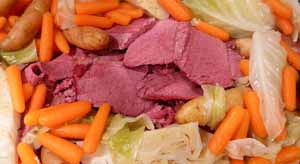
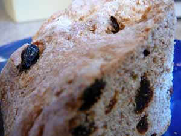

Mom make a St. Patrick's Day dinner
While I realize that St. Patrick’s Day isn’t technically until Saturday, I had four young people at my table last night, and you know my views on holidays as opportunities to pass along food traditions. Fortunately my husband agrees with me, on this issue at least, and while reserving the right to tease me about it, also gives me the kind of admiring looks usually seen on the faces of those who catch a glimpse of the U.S Capitol Building or the Statue of Liberty – awe and reverence. Those are nice once in awhile.
While I was shopping for the annual corned beef and cabbage dinner I started wondering about how the Irish came to be associated with corned beef, and when I got home I looked it up. Thank goodness for the internet! Apparently the association dates back to colonial times in Boston, where there was, and still is, a large concentration of Irish immigrants, who imported meat from Ireland and preserved it in salt to keep it from spoiling on the voyage. “Corn” refers to the kernels, or “corns” of rock salt used in the corning process. It’s possible to corn your own beef and I remember that Cook’s Illustrated magazine had a feature on that in one issue a while back. Of course, your own corned beef wouldn’t have the characteristic red or pink color, which comes from the sodium nitrite added in the commercial corning process; it would be brown and look like a regular beef brisket, but taste salty.
I don’t remember eating corned beef and cabbage when I was little, but Mom did make something she called “New England Boiled Dinner” once in awhile. She made that with a small ham butt, and I don’t think she made cabbage with it, just carrots, potatoes, and maybe small onions. We children didn’t like it all that much, either, but in retrospect it was a very nice meal. She probably served applesauce with it if she had some. I wonder if she saved the water she boiled everything in and used it for split pea soup; I would have. In fact, I used to save the stock from corned beef and cabbage and used it to make cabbage soup, but now I’m aware of all the preservatives in the corned beef that have probably leached out into the cooking liquid so I just throw it out.
Corned Beef and Cabbage
Serves 4

- 8 new potatoes, scrubbed
- 1 pound baby carrots
- water to cover beef
- 1 (4 pound) corned beef brisket with spice packet
- 1 small head cabbage, cut into wedges
Remove brisket from package and place in large pot with contents of spice packet. Add water to cover and simmer, removing scum, for three hours, or until tender. Thirty minutes before ready to serve remove meat from pot and keep warm on platter. Add vegetables to pot and simmer until done. Slice meat thinly across grain. Arrange vegetables around meat and moisten everything with some of the hot stock from the pot. Serve with mustard. Some people like a lemon wedge for the cabbage.
Wholemeal Current Soda Bread, from the Fannie Farmer Baking Book, 1984 edition by Marion Cunningham
- 2 cups all-purpose flour
- 2 cups whole-wheat flour
- 1 teaspoon salt
- 1 teaspoon baking soda
- 3 tablespoons sugar
- 4 tablespoons butter
- 1 1/3 cups buttermilk
- 1 egg, slightly beaten
- 3/4 cup currents or raisins
Preheat oven to 375ºF. Grease a baking sheet or an 8-inch round cake pan.
In a large mixing bowl, stir and toss together all the dry ingredients until completely mixed (I mixed everything in my food processor). Add the butter and work it in with your fingertips until crumbly. Add the buttermilk and egg and stir vigorously with a fork until the dough masses together. Knead on a lightly floured surface for about 30 soconds, working in the currents as you knead. Pat the dough into a round about 8 inches across and 1 1/2 inches thick, and cut a large 1/4 inch deep X across the top.
Place on the prepared baking sheet or in the cake pan. Bake for about 45 minutes, or until well browned and the X has spread open. Transfer to a rack to cool completely, then, if time allows, wrap in a damp towel for 6 to 8 hours before serving.

As you can see from the photo I used raisins in my soda bread. I would rather have used currents because they seem more Irish, somehow, but when I searched for them in the depths of my pantry discovered that they must not have survived the purge I made when the kitchen was remodeled this summer. Why I would have thrown out the currents and not the dried blueberries, surely dating from the same time period, is a mystery to me. I also wanted to add some whole cloves to the corned beef while it cooked and found an empty space in the spice rack where they belonged, as well. And why I chose to chuck those and keep the whole allspice, when cloves are surely more useful, I haven’t a clue, unless it’s that the allspice is in a cute Dean & Deluca tin. That’s me, all about the surfaces.
Comments
I’m having a few people in for the traditional dinner on Sat. The Cook’s cookbook says to add saltpeter if you want the pink look but they preferred the gray corned beef, just dry salted it with spices in a zip loc bag for a couple of days. That came with the Irish to Boston as you said, and the salt was the size of corn kernals, which is where the corned beef came from. I just made an excellent soda bread, recipe from the newspaper. They also said the pointed end of beef was the best. Tastier, fattier or course.
sorry, another comment. Dad just said that was the best soda bread he ever had, even when we were in Ireland. Hooray! I made 2 loaves so have one for Sat. Cooks. also suggests horseradish with the meat, or horseradish mixed with sour cream, and/or grainy mustard
Hmm, considering the way Billy’s been after me lately the saltpeter’s not a bad idea!
I have also heard that point cut is better than flat cut, but thought it was leaner, not fattier. You hardly ever see point cut; I had seven people for dinner, all men except me, so got two three-pound flat cut roasts and cooked both of them. They had a lot of fat on them.
I’ve also seen horseradish suggested as a condiment; I like that with regular brisket but not corned beef.
I’d love to get your recipe for the soda bread; I didn’t think the one I made was all that special.
I think the next time I’m in the checkout line at Whole Foods and the cashier asks me if I found everything I was looking for I’ll tell her that I wasn’t able to locate the saltpeter…
I think you have to get that at a drug store. If you weren’t so beautiful, maybe Billie wouldn’t be after you! :-} Sit back and enjoy!!
Add a comment